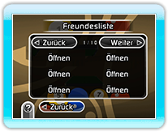
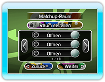
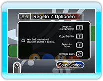

Stelle eine Verbindung zur Nintendo Wi-Fi Connection her, um ein Nintendo Wi-Fi Connection Matchup zu spielen. Wenn die Verbindung steht, lege im Spielmenü das gewünschte Matchup fest. Wähle, ob du in einem 2-Spieler- oder 4-Spieler-Modus antreten möchtest.
● Hinweise zu Nintendo Wi-Fi Connection Matchups
Das Pausen-Menü wird nicht durch Drücken von  angezeigt.
Das HOME-Menü wird nicht durch Drücken von
angezeigt.
Das HOME-Menü wird nicht durch Drücken von  angezeigt.
angezeigt.
● Freundescodes und Freundeslisten
Du kannst erst gegen einen Freund antreten, wenn dieser in deiner Freundesliste registriert ist. Teile deinen Freunden den Freundescode mit, der auf dem Freundesliste-Bildschirm angezeigt wird. Auf diese Weise können sie dich registrieren. Du kannst natürlich auch Freunde aus deiner Freundesliste streichen. Gegen diese kannst du dann aber nicht mehr antreten.

● Gegen Freunde spielen
Ein Matchup gegen einen Freund ist dann möglich, wenn dieser in deiner Freundesliste registriert ist. Wenn er die Verbindung zur Nintendo Wi-Fi Connection unterbricht oder deinen Freundescode aus seiner Freundesliste streicht, kannst du leider nicht gegen ihn spielen.
● Weltweite Matchups spielen
Du kannst weltweit gegen Spieler antreten.
Die Auswahl deines Gegners erfolgt automatisch.

● Regeln
Während eines Nintendo
Wi-Fi Connection Matchups können Regeln nicht geändert werden. Zudem unterliegt jeder Spielerzug einem Zeitlimit. Wenn du deinen Stoß nicht innerhalb dieses Zeitlimits ausführst, wird ein Foul angezeigt, und der nächste Spieler ist am Zug.